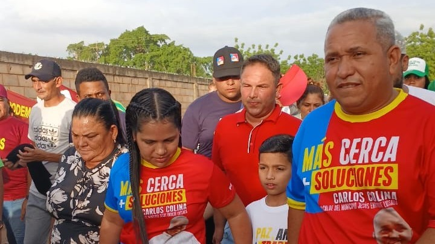

Alcalde Carlos Alberto Colina Espeleta impulsa transformación social en el primer semestre de gestión
La gestión del alcalde Carlos Alberto Colina Espeleta ha marcado un periodo de transformación social, esperanza y cumplimiento. A través de la Dirección Municipal del Poder Popular para el Desarrollo Social, la Alcaldía Bolivariana del Municipio Jesús Enrique Lossada ha ejecutado una ofensiva integral orientada al bienestar de las familias losadeñas, con especial enfoque en la atención y justicia social.
Con alianzas institucionales y recursos propios, el gobierno municipal ha logrado afianzar una red de acciones sociales que se traducen en historias de vida transformadas positivamente. Uno de los mayores logros ha sido la atención directa a las comunidades mediante jornadas médico-asistenciales, vacunación y desparasitación, bajo el programa “Planes de Amor en Acción”, que ha beneficiado a más de 32.000 familias en todo el territorio losadeño.
Durante estas jornadas también se realizó la captación de personas para ser incluidas en el Plan Quirúrgico de Salud, gracias al trabajo conjunto con el gobernador Luis Caldera. A la fecha, se registraron 439 pacientes, de los cuales 273 ya fueron atendidos en una primera fase, con intervenciones quirúrgicas de hernias, lipomas, vesículas, entre otras patologías.
El alcalde Colina Espeleta continúa impulsando políticas sociales alineadas con los programas nacionales, priorizando la atención de los abuelos y abuelas de la patria mediante la creación de círculos de abuelos en el municipio. Hasta la fecha, más de 1.252 adultos mayores han recibido atención médica, valoración nutricional y entrega de suplementos alimenticios y proteínas. En estas actividades, el alcalde cuenta con el apoyo de la primera combatiente, Susana de Colina, y el equipo de la Dirección Municipal del Poder Popular para el Desarrollo Social.
Más allá de la atención médica, la gestión municipal ha centrado esfuerzos en la recuperación del tejido social, beneficiando a más de 3.025 personas con actividades recreativas, deportivas y culturales diseñadas para promover la participación comunitaria y la recuperación de espacios públicos en zonas vulnerables.
La labor coordinada de las diferentes direcciones de la Alcaldía Bolivariana del Municipio Jesús Enrique Lossada ha permitido alcanzar un impacto social masivo, impulsando el cumplimiento de las “7T” en lo social, donde la cuarta T representa un pilar fundamental en la gestión político-social liderada por el alcalde Carlos Alberto Colina Espeleta.